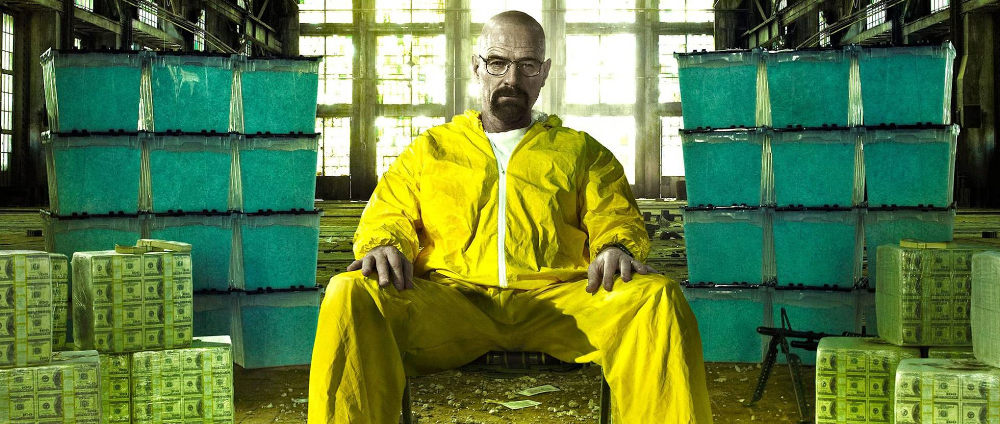

Os Segredos do Sucesso de Breaking Bad
Breaking Bad é amplamente considerada uma das melhores séries de todos os tempos por várias razões:
- Roteiro Brilhante: A série possui um roteiro detalhado e meticulosamente planejado, cheio de reviravoltas surpreendentes e arcos de personagem bem desenvolvidos. Vince Gilligan, o criador, manteve a narrativa coesa e envolvente ao longo de todas as temporadas.
- Desenvolvimento de Personagens: A transformação gradual de Walter White de um professor de química pacato em um impiedoso chefão das drogas é um dos desenvolvimentos de personagem mais bem-executados na história da televisão. O contraste e a evolução de personagens como Jesse Pinkman também adicionam profundidade e complexidade à história.